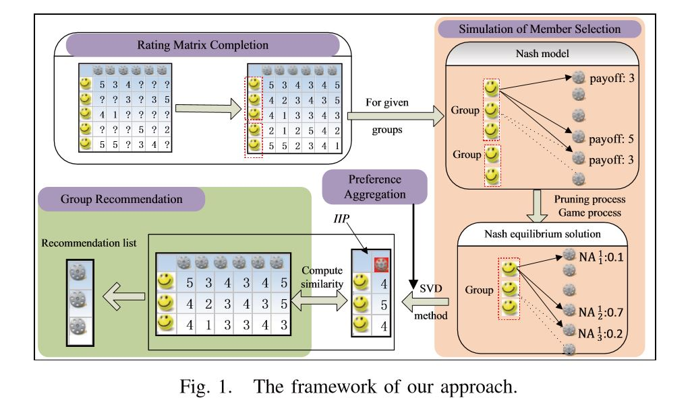

Any suggestions welcome! Please send it to kongry.16@sem.tsinghua.edu.cn .
Recommendation systems
Crowdsourcing systems
Prediction of Markets and Economies, MCMC
Risk Management
09/2014-05/2016, Department of Data Mining, National Engineering Laboratory for Speech and Language Information Processing, supervised by Prof. Qi Liu
1. Design recommendation systems for group users.
Group-oriented services such as group recommendations aim to provide services for a group of users. For these applications, how to aggregate the preferences of different group members is the toughest yet most important problem. Inspired by game theory, we propose to explore the idea of Nash equilibrium to simulate the selections of members in a group by a game process. Along this line, we first calculate the preferences (group-dependent optimal selections) of each individual member in a given group scene, i.e., an equilibrium solution of this group, with the help of two pruning approaches. Then, to get the aggregated unitary preference of each group from all group members, we design a matrix factorizationbased method which aggregates the preferences in latent space and estimates the final group preference in rating space. After obtaining the group preference, group-oriented services (e.g., group recommendation) can be directly provided.

Hongke Zhao, Qi Liu, Yong Ge, Ruoyan Kong, Enhong Chen, Group Preference Aggregation: A Nash Equilibrium Approach, In Proceedings of the 16th IEEE International Conference on Data Mining (ICDM'16), Barcelona, Spain, 2016, 679-688
My major work includes the designing and realization of the recommendation system and I got Outstanding Students Research of USTC in 2015.
2. Model of Incentives in Repeated Crowdsourcing System
Repeated crowdsourcing system refers to the systems with tasks which need to be conducted several times. A problem needs to be solved in repeated crowdsourcing system is how to set appropriate incentives for task receivers to maximize the profits of task givers and task receivers.
I build the discrete model of repeated crowdsourcing system and calculate the profits of task givers and task receivers in each round under different ways of pay, different productive functions and different incentives. I could draw the following conclusions:
1. In discrete model of repeated crowdsourcing system, if incentives are limited, then the cumulative profits of task givers and task receivers are limited.
2. In low-pay discrete model of crowdsourcing system, the cumulative profits of task givers are increasing.
3. The monotonicity of the cumulative profits of task receivers are related to the relative strength of different incentives and the initial profits of task receivers.
This is my undergraduate thesis and I got A.
12/2016-08/2017 Department of Investment Management, Derivatives-China, supervised by Mr. You Zhang (Chairman) and Dr. Ling Long
1. Built market timing strategy based on Hidden Markov Model with improvement via Adaboost to apply to different market environments.
Create consistent return.
2. Application of MCMC and HMM in GDP prediction.


MCMC has lower error rate in the estimation of parameters who have high dimensions and large value.
Thanks to the beneficial suggestions from Prof. Thomas J. Sargent.
09/2017- (ongoing) School of Economics and Management, Tsinghua University, supervised by Prof. Michael R. Powers
1.Risk Finance Paradigm with Copulas
We assume losses are correlated. The reason for taking correlation into consideration is that correlation between losses will affect people’s decision about whether to hedge or pool the loss portfolio L. For example, a group of marine traders want to limit their ship sinking risks. If their routes are different, their ship sinking risks are uncorrelated and they can divide their merchandise into portions and distribute across all ships (pooling), then no trader will be devastated by sinking of one ship. However if their routes are
the same, their ship sinking risks are correlated (their ships may be attacked by hurricane or tidal wave together), then pooling will be useless in this case because they will be devastated by sinking of ship altogether and they should choose to hedge this portfolio like to buy insurance from an insurer (who can afford this because he can pool the risks from different marine trader groups).

|